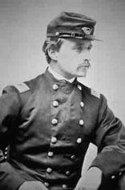
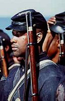

|
Can movies teach history? For Glory, the answer is
"yes." Not only is it the first feature film to treat the
role of black soldiers in the American Civil War, but it
also one of the most powerful and historically accurate
movies ever made about that war. After more than fifty years
on the screen, Scarlett O'Hara and Rhett Butler are still
teaching false and stereotyped lessons about slavery.
Perhaps Glory can restore the image of courageous
black soldiers that prevailed in the North during the latter
war years, before the process of romanticizing the Old South
obscured it.
Glory tells the story of the Fifty-fourth
Massachusetts Volunteer Infantry from its organization
during the winter of 1862-1863 to its climactic assault the
|

Robert Gould Shaw
|
following summer against Fort Wagner, a massive earthworks
guarding the approach to Charleston harbor. The Union's
naval effort to capture Charleston failed earlier in
1863--and so did the assault on Fort Wagner led by the
Fifty-fourth, which suffered nearly fifty percent
casualties. Among those killed was Colonel Robert Gould
Shaw, Glory's protagonist, who died leading his men
over the parapet.
However, if in this sense the attack was a failure, in a
more profound sense it was a success of historic
proportions. The unflinching behavior of the regiment in the
face of an overwhelming hail of lead and iron answered the
skeptic's question, "Will the Negro fight?" It demonstrated
the courage of the race to millions of white people in both
the North and the South who had doubted whether black men
would stand in combat against soldiers of the self-styled
master race.
The recruitment of black combat troops was still regarded
as a risky experiment when the Fifty-fourth's six hundred
men moved out at dusk on July 18 to attack Fort Wagner.
During the next few hours they more than justified that
experiment. Forced by the ocean on one side and swamps on
the other to approach the fort along several hundred yards
of narrow, exposed beach, the regiment moved steadily
forward through bursting shells and murderous musketry.
Losing men every step of the way, they nevertheless
continued right up the ramparts and breached the parapet
before the immense strength of the works stopped them. The
portrayal of this attack in Glory is the most
realistic combat footage in any Civil War movie.
The white officers of the Fifty-fourth represented the
elite of New England society. Some, including Shaw, were
Harvard alumni and sons of prominent families. Several, also
including Shaw, had already fought with white regiments
during the first two years of the war. Antislavery in
conviction, they had willingly risked stigma and ridicule to
cast their lot with a black regiment.
The Confederate defenders of Fort Wagner stripped Shaw's
corpse and dumped it into an unmarked mass grave with the
bodies of his black soldiers. When the Union commander sent
a flag of truce across the lines a day later to request the
return of Shaw's body (a customary practice for high-ranking
officers killed in the Civil War), a Confederate officer
replied contemptuously, "We have buried him with his
niggers."
The performance of the Fifty-fourth Massachusetts at Fort
Wagner not only advanced the liberation of slaves but also
helped to liberate President Lincoln from certain
constitutional and political constraints. These restraints
had earlier inhibited the president from making this war for
the Union a war against slavery, an institution that Lincoln
had often branded a "monstrous injustice."
If it is not literally true, as the movie's final caption
claims, that the bravery of the Fifty-fourth at Fort Wagner
caused Congress to authorize more black regiments--this had
happened months earlier--the example set by the Fifty-fourth
did help transform potential into policy. However,
Glory does not go into detail about the impact of the
battle on northern opinion, nor does it provide much
political context for the black soldier issue. In fact, the
movie ends with the attack on Fort Wagner, although the
Fifty-fourth continued to serve throughout the war, fighting
in several more battles and skirmishes.
Except for Shaw, the principal characters in the film are
fictional. There was no real Major Cabot Forbes; no
Emerson-quoting black boyhood friend of Shaw's named Thomas
Searles; no tough Irish Sgt. Major Mulcahy; no black
|

Denzel Washington as Trip.
|
Sergeant (and father figure) John Rawlins; no brash,
hardened Private Trip. Indeed, there is a larger fiction
involved here. The movie gives the impression that most of
the Fifty-fourth's soldiers were former slaves. In fact,
this atypical regiment was recruited mainly in the North, so
most of the men had always been free. Some came from
prominent northern black families; two of Frederick
Douglass's sons were among the first to sign up. The older
son was sergeant-major of the regiment from the start. (The
regiment's young adjutant, wounded in the Fort Wagner
assault, was Garth Wilkinson James, brother of William and
Henry James.)
Real historical figures such as these could have provided
the framework for a dramatic and important story about the
relationship of northern blacks to slavery and the war, and
about the wartime ideals of New England culture. But the
story that producer Freddie Fields, director Edward Zwick,
and screenwriter Kevin Jarre chose to tell is not simply
about the Fifty-fourth Massachusetts but about blacks in the
Civil War.
Most of the 178,000 black soldiers (and 10,000 sailors)
were slaves until a few months, even days, before they
joined up. They fought for their freedom and for the freedom
of their families and their people. This was the most
revolutionary feature of a war that wrought a revolution in
America by freeing four million slaves and uprooting the
social structure of half the country. Arms in the hands of
slaves had been the nightmare of southern whites for
generations. At Fort Wagner, the nightmare came true.
Fighting for the Union bestowed upon former slaves a new
dignity, self-respect, and militancy, which helped them
achieve equal citizenship and political rights for a time
after the war.
Many of the events described in Glory are also
fictional: the incident of the racist quartermaster who
initially refuses to distribute shoes to Shaw's men; the
whipping Trip receives as punishment for going AWOL; the
regiment's dramatic refusal on principle to accept less pay
than white soldiers, which shames Congress into equalizing
the pay of black soldiers (this actually happened, but at
Shaw's initiative, not Trip's); the religious meeting the
night before the assault on Fort Wagner.
However, there is a larger truth. Glory's point is
made symbolically in one of its most surreal and, at first
glance, irrelevant scenes. During a training exercise, Shaw
gallops his horse along a path flanked by stakes, each
holding aloft a watermelon (in February in Massachusetts?).
Shaw slashes right and left with his sword, slicing and
smashing every watermelon. The point becomes dear when we
recall the identification of watermelons with the darky
stereotype. If the image of smashed watermelons in
Glory can replace that of moonlight and magnolias in
Gone with the Wind as America's cinematic version of
the Civil War, it will he a great gain for us.
Source: James McPherson in Past Imperfect:
History According to the Movies (New York: Henry Holt & Co., 1996), 128-32.
|